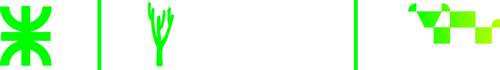
Universidad Tecnológica Nacional
Facultad Regional Resistencia · Extensión Áulica Formosa
NUTROGAN
Ganadería de precisión.
El dato se carga en el potrero. La decisión se toma con el número delante.
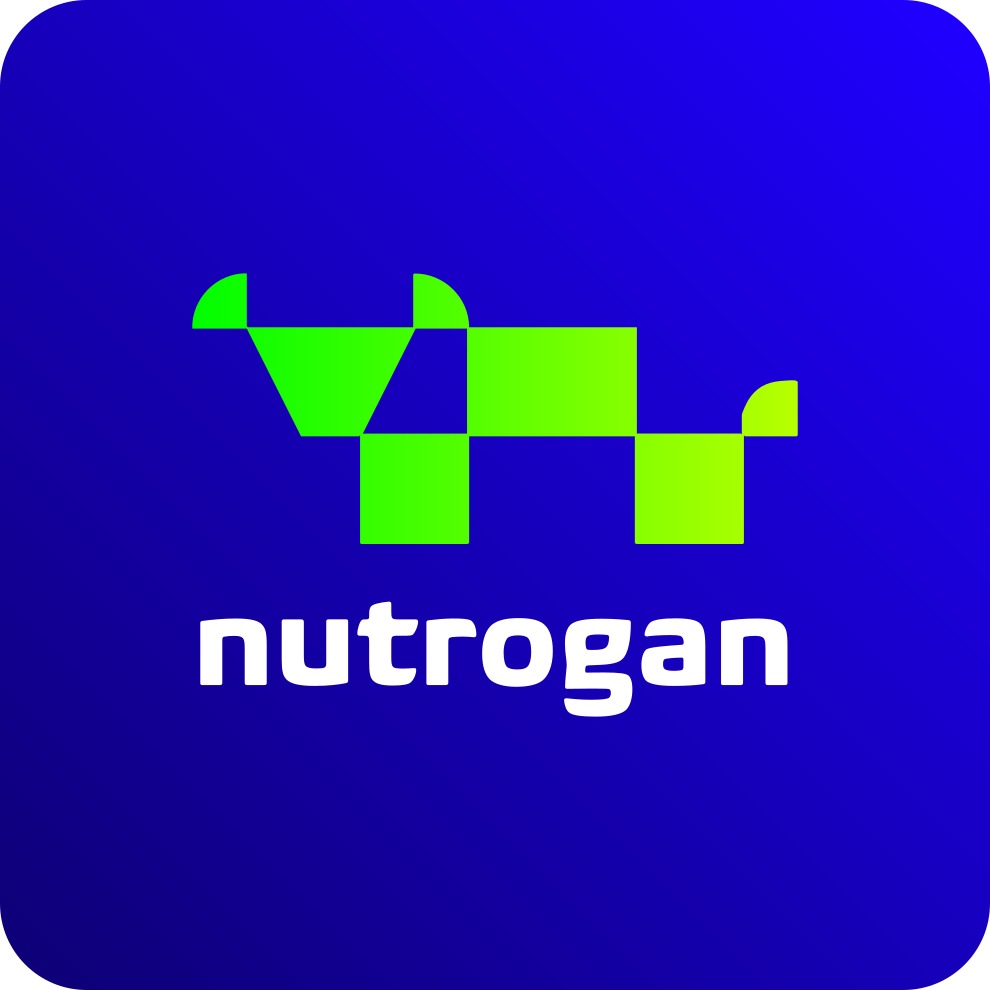
Medir el campo,
aunque no haya señal.
En los campos de prueba de CEDEVA el pesaje ocurre sin señal. La aplicación lo guarda en el teléfono y lo sube cuando vuelve la red. Todo apunta a una pregunta: si el rodeo gana kilos, con qué pasto, con qué agua y a qué costo.
Se anota igual
Peso, movimiento o lluvia quedan en el teléfono. Cerrar la aplicación no borra el día.
Dos pesos, un resultado
Se pide el peso de hoy y el anterior. Con los días que pasaron, la aplicación calcula cuántos kilos gana por día. Si falta un peso, no lo inventa.
Un solo campo
Mapa, pasto, agua y despensa son del mismo establecimiento. Lo que se carga en uno se ve en los otros.
De la libreta al sistema
Nació donde la libreta llega tarde
CEDEVA prueba tecnología en Las Lomitas, semiárido, y en Misión Tacaaglé, subtropical. El pesaje, el análisis de agua y el cambio de potrero ocurren ahí. La oficina se entera cuando la libreta vuelve.
El evento
Un pesaje, un análisis de agua o un cambio de parcela. Ocurre lejos de la computadora.
La espera
La libreta viaja. Rotar el pasto, tratar o vender ya se decidió sin ese número.
La fuga
Sin pesos seguidos, el ternero se vende sin terminar. No se puede saber si convenía dejarlo.
Por qué el software de la ciudad no alcanza
El potrero no está online
Si la aplicación solo guarda con internet, en el potrero se apaga. El operario vuelve al papel y ese día no entra al campo.
La rentabilidad aparece en la venta
Sin pesos con fecha no se sabe cuánto gana por día. Sin el precio de la comida, el costo del kilo aparece recién cuando el animal se vende.
La condición corporal es subjetiva
La escala INTA va de 1 a 9. Dos personas anotan distinto, y la dieta y la reserva forrajera heredan ese número.
Centro de Validación de Tecnologías Agropecuarias
Organismo del Gobierno de Formosa. Prueba tecnología en el campo y la transfiere al productor. Asesoró este trabajo. Tutor: Ing. Zoot. Héctor Fabián Centurión, Las Lomitas.
Leandro F. De Pedro
Ing. Agr., CEDEVA. Puso nombre al problema y abrió los campos donde se probó la aplicación.
Agostina A. Collavino
Dra. Asesoría externa, CIT. Definió desde qué valor el agua pasa de apta a riesgosa. Eso es el semáforo de la pantalla.
Iván Filip
Dr. Asesoría externa, CIT. Aportó cómo se calcula la ganancia de peso y la nutrición. La pantalla muestra el resultado; no lo inventa.
Jorge Levingston
Dr., Secretaría de Ciencia y Tecnología de Formosa. Revisó si el proyecto era viable para llevarlo a un productor.
Una plataforma que decida con el campo abierto
El objetivo es anotar el ciclo del animal aunque no haya señal, y que con esos datos se pueda decidir si conviene seguirlo en el campo.
Anotar
Peso, movimiento, lluvia o sanidad se guardan en el momento. La señal no es condición.
Confirmar
La cámara se abre y propone la condición, una anomalía o la lectura fecal. Quien está en el campo acepta o corrige antes de guardar.
Ubicar
Se dibuja el potrero para saber las hectáreas y dónde está cada grupo. No se pide un número de memoria.
Decidir
Kilos por día, comida que queda y margen salen de lo cargado. Si falta un dato, se ve que falta.
¿Este rodeo está ganando, y a qué costo?
Se pide para saber cuántos kilos gana por día. Sin dos fechas, esa cuenta no existe.
La cámara se abre y propone cómo está el grupo. Si está bajo, explica por qué dejó de ganar. No diagnostica.
El dibujo del potrero dice dónde está y cuántas hectáreas tiene. El satélite avisa si el verde baja.
Un análisis malo o una bolsa que se acaba pueden frenar esa ganancia antes de la venta.
Cerrar el ciclo
Decidir si el animal se termina en el campo, con pasto, agua y comida medidos.
Primero el potrero. Después la nube.
Se anota en el potrero aunque no haya internet. Cuando vuelve la señal, esos mismos datos aparecen en la oficina.
Cuatro razones que vienen del campo
El lugar de trabajo
Quien carga está en un potrero. Si el guardado depende de la señal, el día se pierde.
Una sola aplicación
Se instala desde el navegador. La misma sirve para anotar en el teléfono y para mirar el mapa en la oficina.
Memoria del teléfono
Lo pendiente espera ahí. Cerrar la aplicación no obliga a cargar de nuevo.
Cada campo, el suyo
Entrar a un establecimiento no muestra los animales ni los costos del vecino.
Cada pieza tiene un porqué
Vue
Arma la pantalla por partes. Cambiar el aviso del agua no obliga a rehacer el mapa.
Quasar
Botones grandes, gestos y la instalación como aplicación, en el teléfono y en la computadora.
Pinia
Un solo lugar calcula los kilos por día y el color del agua. La pantalla solo muestra.
Leaflet
El mapa satelital donde se dibuja el potrero y se ven las hectáreas.
PostgreSQL
El lote, el potrero, la comida y la persona quedan relacionados. Un peso no queda suelto.
Supabase
Guarda esos datos en la nube, recuerda quién entró y no mezcla un campo con otro.
Cámara e informe
La cámara se abre y propone un dato. El informe redactado se pide aparte, solo con lo ya cargado.
Docker y GitLab
La misma aplicación en las tres máquinas. Si un cambio rompe algo, no se publica.
Por qué el dato de un lado sirve en el otro
Un grupo de animales no está suelto: vive en un campo, ocupa un potrero y acumula lo que se le carga. Por eso el peso, el agua y la comida se pueden leer juntos.
El campo
Todo lo demás es de ese establecimiento. No se mezcla con otro.
Los potreros
Dibujo, hectáreas, tipo de pasto y qué tan verde está.
Los grupos
Cuántas cabezas hay y de qué categoría. Ahí se ve la ganancia por día.
Lo que les pasa
Peso, condición, sanidad, cría, lo que se puso y lo que sobró.
Las aguadas
Están en un potrero. El análisis dice si el agua está apta, en duda o en riesgo.
La despensa
Cada bolsa tiene precio. Cada uso baja el stock y suma costo al kilo.
Los milímetros
Se cargan a mano. Si no hay, se usa una estimación de grilla y se aclara que no es el pluviómetro.
Cada productor ve solamente su campo
Superadmin
Ve todo el campo y la bitácora: quién cargó, cambió o borró, y a qué hora. El primero entra con ese rol.
Administrador
Maneja el establecimiento, el equipo y los costos. No ve esa bitácora ni puede crear otro superadmin.
Técnico
Veterinario o ingeniero: mapas, agua, reportes y la decisión del lote. No arma el equipo ni la despensa de costos.
Peón
Solo carga en el potrero: peso, movimiento, comida, lluvia, agua, visión y situación.
Oficina de noche. Potrero de mediodía.
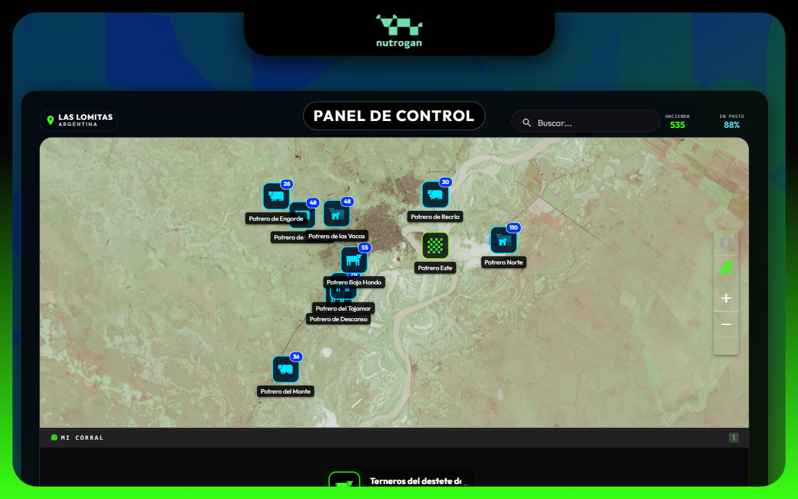
Oficina: el mapa muestra lo que ya se cargó en el campo. Sirve para mirar, no para anotar apurado.
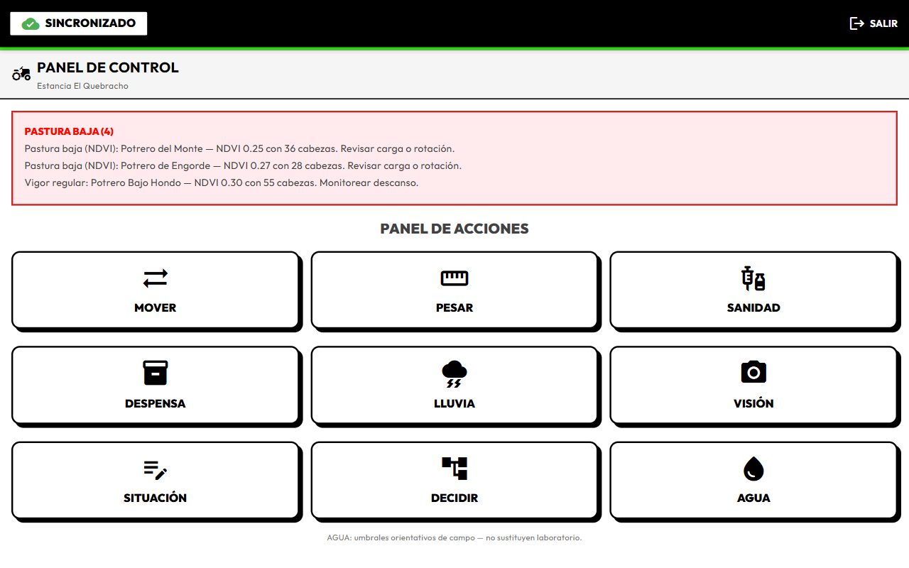
Potrero: botones grandes para cargar. Quien puede decidir ve ese botón. El peón no.
Los verbos del potrero. Ningún menú escondido.
El establecimiento, visto desde arriba
El kilo diario sale de dos pesajes
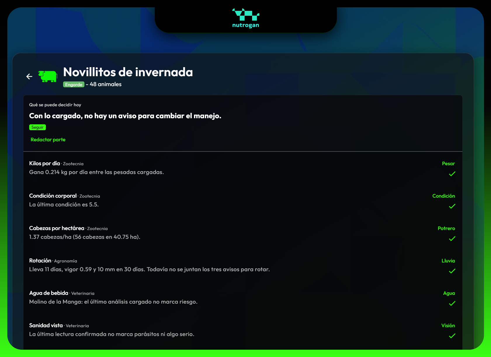
Dos pesajes, un resultado
Sale del peso de hoy menos el anterior, dividido los días. Si falta un peso, no se completa. Si se carga tarde, se ordena por fecha.
Comida, cría, sanidad
Lo que se comió entra al costo del kilo. Un tacto vacío o un aborto reciente pide revisión. El servicio y el parto quedan en la historia y no inventan kilos.
La cámara propone. La persona confirma.
Se abre la cámara
Pide permiso y muestra la imagen. La foto se saca ahí. Si no hay permiso, se puede elegir una imagen o anotar a mano.
Condición
Propone un número del 1 al 9. Quien está ahí acepta o corrige. Recién entonces queda en el grupo.
Algo raro
Una lesión, el pasto o una instalación. Avisa qué vio y qué tan grave parece, para revisar en el momento.
Lectura fecal
Mira consistencia y color. Orienta el recorrido. No reemplaza al veterinario.
Sin señal, la foto espera igual que un pesaje. La sugerencia llega cuando el teléfono vuelve a tener red.
Objetivar lo que antes dependía del ojo
Explica el peso
Si el animal está flaco, se entiende por qué dejó de ganar kilos. La foto no es una pantalla aparte.
Mismo camino
Si no hay señal, la foto espera junto con el pesaje. No hay un trámite distinto.
La persona decide
La cámara no guarda sola. Quien está en el campo corrige el número antes de dejarlo asentado.
Cada potrero con nombre, forma y vigor
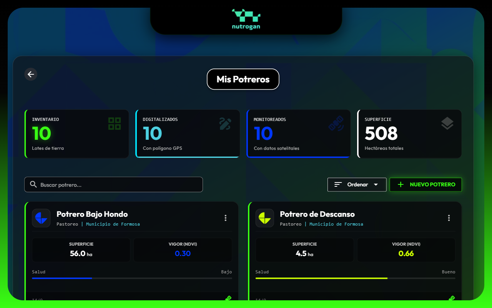
Sentinel-2 mira el pasto entre recorridas
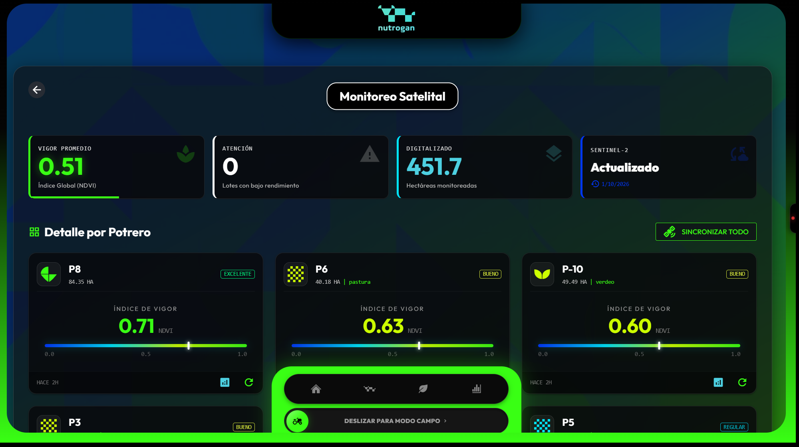
Agua de bebida y lluvia del mes
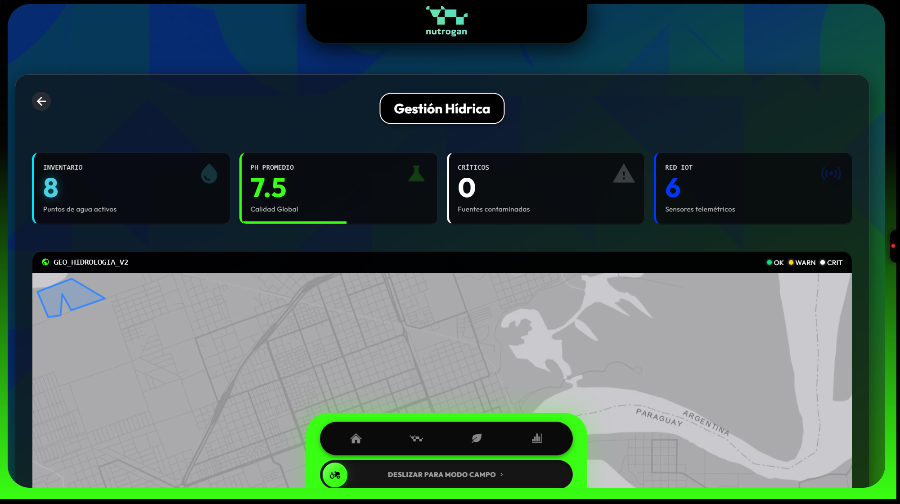
Se pide el análisis porque el agua mala frena la ganancia. El color sale de ese resultado, no de un sensor en vivo.
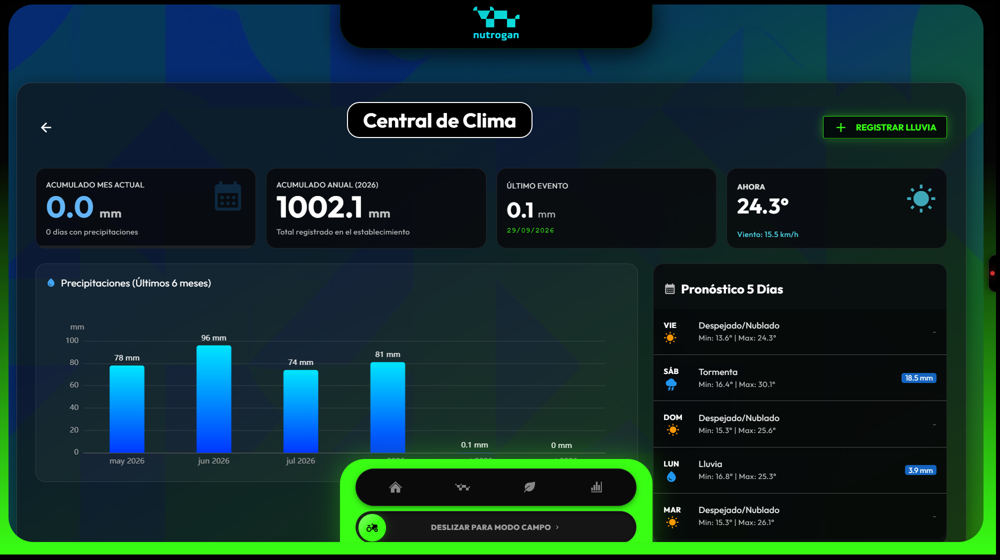
Se anotan los milímetros del día. Si no hay carga, entra una estimación de grilla y se aclara que no es el pluviómetro.
Cada bolsa tiene precio y cada uso descuenta
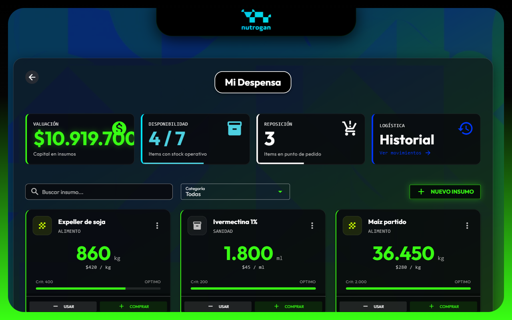
Cada lote dice si seguir, rotar o revisar
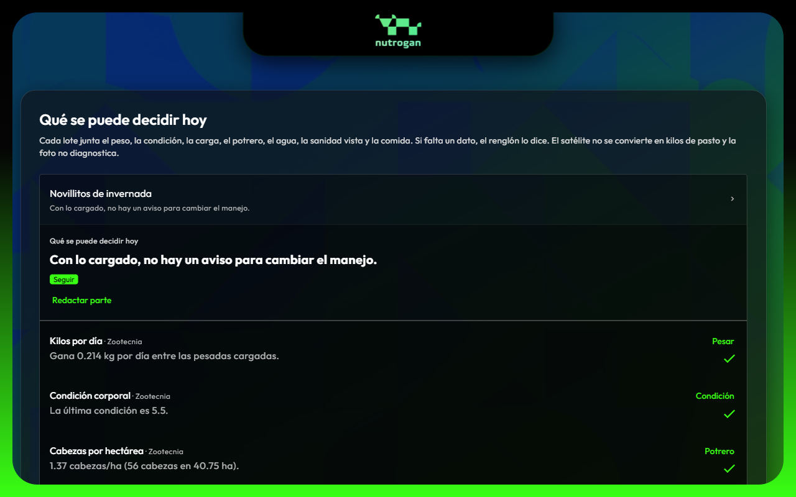
La reunión se hace con el número del campo
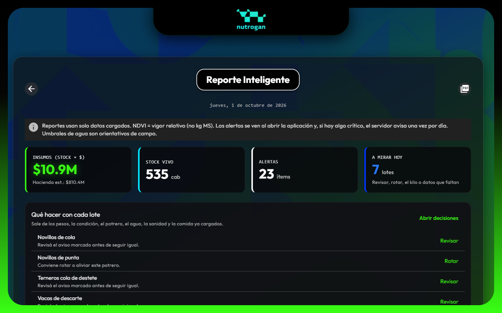
La misma hacienda, en tres escalas
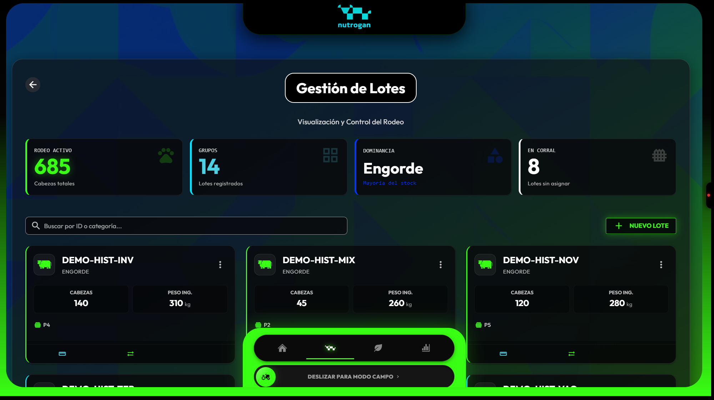
Los grupos: de acá sale el peso y la ganancia
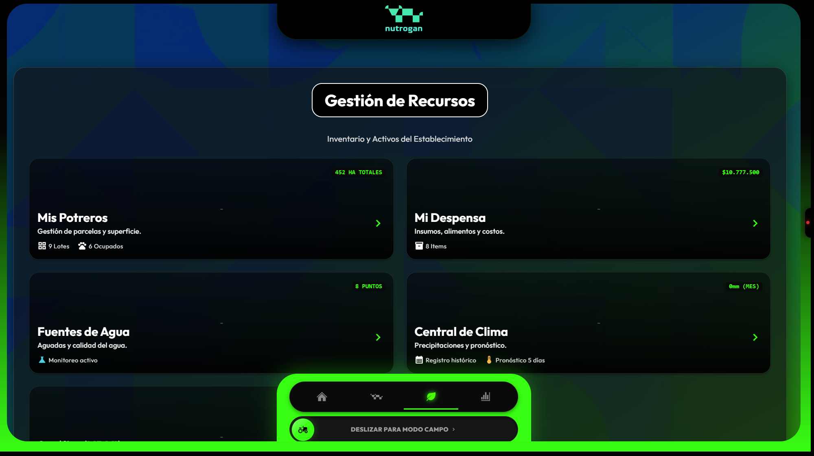
Pasto, comida, agua y lluvia del mismo campo
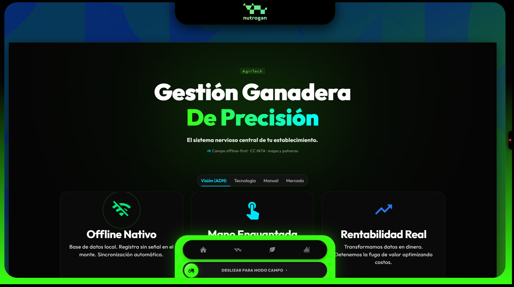
Se usa sin señal, en el mapa y con el margen a la vista
Equipo de desarrollo
Fabricio Duarte
Legajo 29.154. La aplicación en el teléfono, el modo campo y que el dato no se pierda sin señal.
Enzo Ascona
Legajo 29.134. Cómo se relacionan los datos y que cada campo vea solo lo suyo.
Sebastián Amarilla
Legajo 29.132. Que la misma aplicación llegue a las tres máquinas y que un cambio roto no se publique.
Gracias
Para obtener demo del proyecto, comunicate con el equipo
Universidad Tecnológica Nacional
Facultad Regional Resistencia · Extensión Áulica Formosa